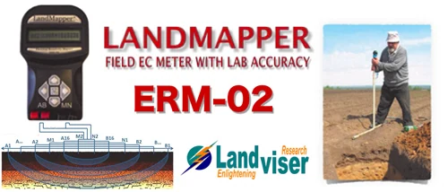

Описание
Почвоведы и геологи! Отложите на время Ваши лопаты и почвенные буры! Предлагаем Вашему вниманию LandMapper® ERM-01 – новый портативный прибор, который поможет Вам выделить земельные участки с контрастными свойствами почвы быстро, без бурения и прикопок, и экономически эффективно. LandMapper® ERM-01 измеряет электрическое сопротивление или проводимость почвы и связанные с ними почвенные свойства для экспрессного полевого картирования и мониторинга сельскохозяйственных угодий, геологических, гидрологических и экологических изысканий; а также строительства и ландшафтного дизайна. LandMapper® ERM-01 является универсальным инструментом для картирования почв при экологическом мониторинге земель и экосистем, обслуживании газонов, парков, полей для гольфа и футбола, управлении фермерским хозяйством, планировании освоения новых земель под застройку и сельско-хозяйственное производство. Это незаменимый инструмент для судебно-медицинских и археологические экспертов; даже для профессиональных кладоискателей. Используя этот прибор до отбора проб почвы можно значительно уменьшить количество необходимых образцов и точно разработать план картирования и мониторинга на основе пространственной изменчивости исследуемого участка.
Прибор исключительно прост в эксплуатации. Типовая электродная установка с четырьмя электродами легко заземляется на поверхности почвы, после нажатия кнопки через 4 секунды значение электрического сопротивления считывается с цифрового дисплея. Прибор измеряет электрическое сопротивление в поверхностном слое почвы глубиной от 2 см до 50 м, которая устанавливается путем увеличения размера четырех-электродной установки. Измерения основаны на хорошо известном принципе “4-электрода”, что позволяет избежать влияния разности потенциалов на контакте измерительных электородов и получить точные значения удельного электрического сопротивления в любой среде с сопротивлением от 0.01 Ом м то 1.5 Мега Ом м. Прибор разработан российскими учеными при поддержке американской компании Landviser, LLC и производиться в России с 2003 года ООО Астро-Электроника. Полевые испытания были выполнены нашими клиентами в России, Украине, Казахстане, Азербайджане, Китае, США, Канаде, Швеции, Франции, Германии, Ираке, Дубае, Бразилии, Панаме и многих других странах.

• Компактная и портативная конструкция (вес всего 250 г без электродных установок)
• Быстрый (одно измерение занимает 4 сек.)
• Глубинные измерения без нарушений почвенного покрова (заземление на 2-5 см по поверхности позволяют измерять эл. сопротивление до 50 м и более)
• Точная (автоматическая компенсация спонтанного потенциала, возникающего при заземлении электродов)
• Безопасный и экономичный (используется стандартная батарея 9 В)
• Связь с персональным компьютером для передачи данных (сохраняет 999 значений)
• Модульные и взаимозаменяемые: 4-электродные датчики, много-электродные установки для 1Д, 2Д, и 3Д вертикального электрического зондирования, картирования и профилирования, лабораторные кюветы предлагаются в зависимости от объекта исследования и интересов заказчика
• Универсальный (один прибор используется при полевых и лабораторных исследований)
• Недорогой – цена в 2-3 раза меньше отечественных и зарубежных аналогов.
Производитель “Landviser”
Технические характеристики
|
Общие параметры • Диапазон измерений: ER=0.1-1 106 Ohmm; EC=1 10-6 – 10 Sm-1; EP=-1 to +1 V (∆=0.01 mV) • Режимы работы: ER/EC/EP • Автоматическая подстройка диапазона электрического сопротивления/проводимости/потенциала для достижения точности измерения • Точность не хуже: 1% • Настраиваемый коэффициент “K” (geometrical coefficient): 0.1 up to 99.9 • Кол-во вариантов K-коэффициента: 10 • Кол-во точек измерения 999 • Рабочая температура от – 10 до + 40 C0 • Влажность до 65 % • Вес: 250 г • Ток потребления до 7.0 мA • Выходное напряжение до 5 V • Измерения постоянным током, с частотой: 1.25 Гц • Связь с ПК: serial port |
Комплектация и цены
Загрузки
LandMapper® ERM-02 техническая спецификация |
|
Measuring Electrical Properties of Natural Systems with LandMapper® ERM-02 |
Применение
|
• определение удельных электрических сопротивлений геоэлектрических разрезов методом сопротивлений с установками профилирования и зондирования; • площадные инженерно-геологические исследования; • определение характеристик грунтов по их электрической проводимости под основания зданий и сооружений; • измерение сопротивлений заземлителей; • обнаружение и прослеживание водопроводных и канализационных магистралей, подземных газо- и нефте-продуктопроводов, силовых кабелей, линий телефонной и сигнальной связи, в том числе методом заряда; • определение местоположения нарушений изоляции металлических трубопроводов путем регистрации активности коррозионных процессов; • поиски и оконтуривание археологических объектов; • агро-экологическое картирование фермерских угодий, лесных и парковых хозяйств и определение потенциального почвенного плодородия. Электрическое сопротивление зависит от почвенной текстуры, структуры, засоления, каменистости и содежания гумуса; • экологическое картирование и мониторинг почв загрязненных нефте-продуктами, мониторинг засоления газонов, клумб и обочин при зимней обработке магистралей против гололеда; • определение и мониторинг уровня залегания грунтовых вод и подтопления территорий, в том числе и в городских условиях; • мониторинг промерзания почв; • измерение и мониторинг электрического сопротивления в лабораторных экспериментах: колонках, образцах, растворах, пастах и суспензиях. |
Галерея


Оборудование, комплектация и консультации: связаться с КБ Электрометрии.